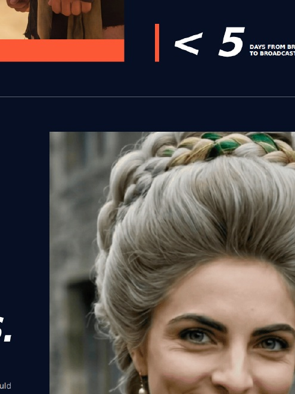

Lots of assets. No central story.
The film says one thing. Paid social says another. Sales explains the product again. Nothing compounds.
Your product. Your moment.
You have something worth choosing. We turn it into one clear campaign, combining strategy, story and production, so your audience understands why it matters and knows what to do next.
For product launches, brand campaigns and high-stakes commercial moments.
Current commercial cases were delivered through Vertical Haus and use company-reported results. Leading Lady records are detailed in its evidence page.
The challenge
You are already accountable for making the launch land. Then the brief splinters across strategy, film, social, paid, sales and production, while every partner owns only one piece.
You end up managing the gaps instead of leading the launch.
The film says one thing. Paid social says another. Sales explains the product again. Nothing compounds.
Every supplier needs the context from scratch. You carry the proposition, the politics and the pressure.
Budget gets spent on polished work before anyone has made the reason to choose emotionally clear.
Your campaign producer
We know what it feels like when the deadline is fixed, the product is complex and every team needs something different.
Campaign Producers connects the commercial choice, creative idea and finished work in one accountable line. You are still the person leading the launch. You just stop carrying every gap alone.
A simple plan
You do not need to arrive with the campaign solved. A product, a commercial goal and a deadline are enough to begin.
Tell us what you are selling, who needs to choose it, what must happen commercially and when.
A rough brief is enough.We find the audience barrier, the human change and the campaign idea that makes the offer matter.
You approve one clear direction.We produce the connected work, deliver it for the right channels and build in learning where the brief allows.
Every asset has a commercial job.What you get
Every engagement begins by agreeing the commercial job. From there, we can clarify the campaign, produce the launch or help the work learn.
For a product with value but no unifying campaign idea.
For a launch that needs one creative system and the production to deliver it.
For teams that want genuine creative alternatives and evidence for the next decision.
The proof
Not a showreel. Three examples of an urgent commercial job, a produced campaign and a measurable response.

Queensberry × DAZN
The launch needed a 30-second commercial that could create anticipation for a live fight night and survive international broadcast delivery.

Queensberry × DerbyFest
DerbyFest needed a distinctive campaign world that could pull the event into a much larger Queensberry push and give audiences a clear reason to buy now.

Leading Lady / Independent film campaign
An independent romantic comedy became South Africa's second-highest-grossing local film of 2014 and travelled across 15 territories.
Queensberry cases were delivered through Vertical Haus and use company-reported results. Leading Lady's admissions, cinema count and territory sales are drawn from Henk's retained campaign records; independent sources corroborate its national ranking, box office and North American rights deal.

Authority without the ego
When your campaign is on the line, you need more than someone who can make content. You need someone who can take an idea through proposition, finance, production, distribution and into the hands of an audience.
Henk Pretorius has done that across cinema, streaming, mobile-first drama and commercial campaigns. Campaign Producers gives your launch the writer's instinct for the human truth, the director's command of attention and the producer's responsibility for delivery.
The film record is not the service. It is evidence that making an audience care has always been the job.
The successful ending
Start here
Tell us what you are taking to market, what needs to happen and when. We will reply with the questions and the next useful step, not a generic credentials deck.
Before you brief us
Yes. A rough brief is enough to begin. We will help define the audience barrier, commercial job and useful starting point.
No. Film is one possible asset. The work can include campaign direction, proposition, creative concepts, scripts, social, paid, sales and launch materials.
Yes. Campaign Producers can lead the whole campaign or take responsibility for the missing strategic, creative or production layer.
We can build the campaign system and media-ready creative, then work with your media partner or bring in the right specialist support.
Yes, when the decision line is clear. The Queensberry × DAZN case moved from brief to international broadcast in fewer than five days.